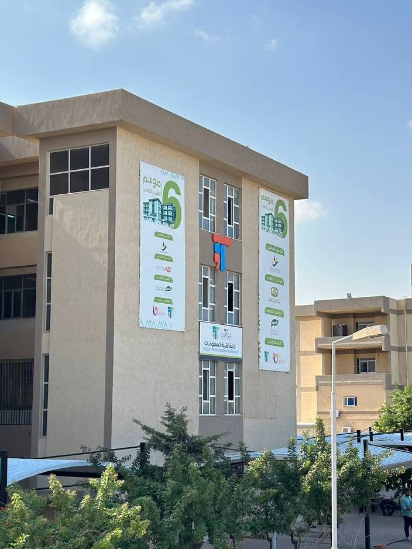

كلية تقنية المعلومات
النظام الدراسي :
تتبنى الكلية نظام الدراسة بنظام الفصول الدراسية (السمسترات)،
حيث يبدأ الطالب بدراسة الفصل الأول في المرحلة التمهيدية التطبيقية.
بعد ذلك، يتم إلحاقه بكلية تقنية المعلومات.
يلتزم الطالب بإكمال 45 وحدة دراسية قبل أن يتمكن من اختيار التخصص في أحد الأقسام.
عند إتمام 85 وحدة دراسية، يصبح بإمكانه تسجيل مشروع التخرج.
يتخرج الطالب بنجاح عند استكمال 134 وحدة دراسية.التخصصات :
- علوم حاسوب
- هندسة برمجيات
- نظم الانترنت
- نظم المعلومات
- الشبكات
- الوسائط المتعددة
مواد الكلية :
بالاضافة إلى مواد التخصص تختلف من قسم لآخر
- برمجة 1
- برمجة 2
- برمجة موجهة نحو الهدف
- اسياسيات تقنية معلومات
- تصميم منطقي
- رياضة 1
- رياضة 2
- تحليل عددي
- مقدمة برمجة انترنت
- مقدمة نظم معلومات
- مقدمة شبكات

عدد
الطلاب
في الأقسام
علوم
حاسوب
200 طالب 150 طالبة هندسة
برمجيات
130 طالب 180 طالبة نظم
الأنترنت
220 طالب 300 طالبة